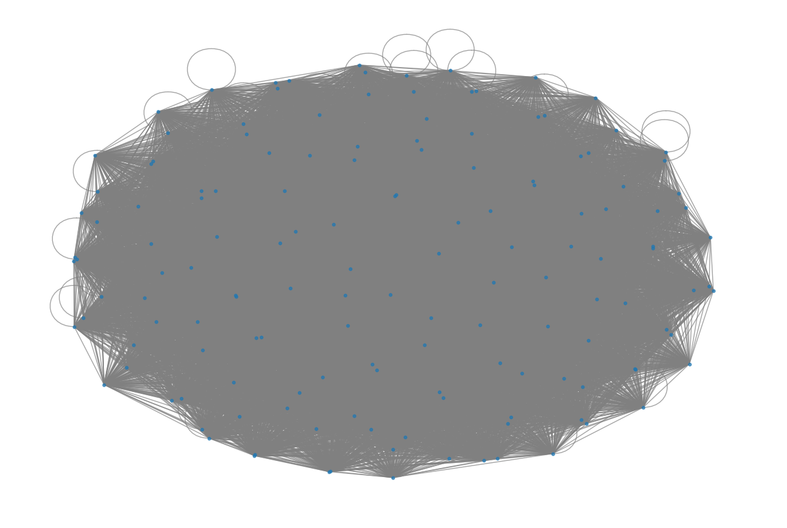

Crawl Detik#
Program ini, “Detik News Scraper”, dirancang untuk mengambil informasi dari situs detik.com terkait topik berita yang diinginkan. Pengguna memasukkan topik, program mengambil URL berita, dan kemudian ekstrak informasi seperti judul, penulis, tanggal, dan isi berita.
import requests
from bs4 import BeautifulSoup
import pandas as pd
import json
class Detik:
def __init__(self, topic):
self.topic = topic
self.df = None # Inisialisasi DataFrame sebagai None
def get_urls(self):
news_links = []
# get news URL from page 1
page = 1
url = f"https://www.detik.com/search/searchall?query={self.topic}&siteid=2&sortby=time&page={page}"
html_page = requests.get(url).content
soup = BeautifulSoup(html_page, 'lxml')
articles = soup.find_all('article')
# Ambil hanya satu URL berita, jika ada
if articles:
url = articles[0].find('a')['href']
news_links.append(url)
return news_links
def has_link(self, text):
# Fungsi untuk memeriksa apakah teks mengandung tautan
return 'href=' in text
def extract_news(self):
# get news article details from scraped URLs
scraped_info = []
for news in self.get_urls():
source = news
html_page = requests.get(news).content
soup = BeautifulSoup(html_page, 'lxml')
# check if title, author, date, news div, is not None type
title = soup.find('h1', class_='detail__title')
if title is not None:
title = title.text
title = title.replace('\n', '')
title = title.strip()
author = soup.find('div', class_='detail__author')
if author is not None:
author = author.text
date = soup.find('div', class_='detail__date')
if date is not None:
date = date.text
# Ambil isi berita dari div dengan class 'detail__body-text itp_bodycontent'
content_div = soup.find("div", {"class": "detail__body-text itp_bodycontent"})
if content_div:
# Hilangkan elemen-elemen <a> yang merupakan tautan
for a_tag in content_div.find_all(self.has_link):
a_tag.decompose()
# Ambil teks dari div
news_content = ' '.join(content_div.stripped_strings)
# convert scraped data into a dictionary
news_data = {
"url": source,
"judul": title,
"penulis": author,
"tanggal": date,
"isi": news_content
}
# add dictionaries to a list
scraped_info.append(news_data)
self.df = pd.DataFrame.from_dict(scraped_info)
self.df.to_csv(f'{self.topic}.csv', index=False) # Simpan DataFrame ke dalam file CSV
# Input topik berita
topic = input("Masukkan topik berita yang ingin diambil: ")
detik_crawler = Detik(topic)
detik_crawler.extract_news()
# Setelah DataFrame df dibuat dalam metode extract_news, Anda dapat mengaksesnya di sini
detik_crawler.df
---------------------------------------------------------------------------
StdinNotImplementedError Traceback (most recent call last)
<ipython-input-1-a3deb2ac3a2f> in <cell line: 78>()
76
77 # Input topik berita
---> 78 topic = input("Masukkan topik berita yang ingin diambil: ")
79 detik_crawler = Detik(topic)
80 detik_crawler.extract_news()
/usr/local/lib/python3.10/dist-packages/ipykernel/kernelbase.py in raw_input(self, prompt)
846 """
847 if not self._allow_stdin:
--> 848 raise StdinNotImplementedError(
849 "raw_input was called, but this frontend does not support input requests."
850 )
StdinNotImplementedError: raw_input was called, but this frontend does not support input requests.
Ekstraksi Kalimat#
import nltk
from nltk.corpus import stopwords
from nltk.tokenize import word_tokenize
import pandas as pd
import re
import string
nltk.download('punkt')
nltk.download('stopwords')
# Mendapatkan daftar stop words dalam bahasa Indonesia
stop_words = set(stopwords.words('indonesian'))
# Fungsi untuk melakukan tokenisasi kata, konversi ke huruf kecil, dan menghapus tanda baca dan angka
def extract_and_preprocess_words(text):
words = word_tokenize(text)
preprocessed_words = [word.lower() for word in words if (word.isalpha() and word.lower() not in stop_words)]
return preprocessed_words
# Buat DataFrame baru untuk kata-kata
kata_df = pd.DataFrame(columns=['berita_id', 'kata'])
# Ekstrak dan proses setiap berita
for i in range(len(detik_crawler.df)):
berita_id = i
berita = detik_crawler.df.loc[i, 'isi']
kata_berita = extract_and_preprocess_words(berita)
# Tambahkan setiap kata ke DataFrame
for kata in kata_berita:
kata_df = pd.concat([kata_df, pd.DataFrame({'berita_id': [berita_id], 'kata': [kata]})], ignore_index=True)
# Tampilkan DataFrame dengan kolom 'berita_id' dan 'kata'
print(kata_df[['berita_id', 'kata']])
[nltk_data] Downloading package punkt to /root/nltk_data...
[nltk_data] Package punkt is already up-to-date!
[nltk_data] Downloading package stopwords to /root/nltk_data...
[nltk_data] Package stopwords is already up-to-date!
berita_id kata
0 0 bandung
1 0 nama
2 0 anak
3 0 doa
4 0 harapan
.. ... ...
450 0 bayi
451 0 sunda
452 0 nama
453 0 sunda
454 0 sunda
[455 rows x 2 columns]
TF-IDF#
Membentuk Graph#
import networkx as nx
import matplotlib.pyplot as plt
# Buat graf
G = nx.Graph()
# Tambahkan tepi (edge) antara kata-kata
for i in range(len(kata_df)):
for j in range(i + 1, len(kata_df)): # Hindari menghitung skor untuk diri sendiri dan duplikat
kata_i = kata_df.loc[i, 'kata']
kata_j = kata_df.loc[j, 'kata']
G.add_edge(kata_i, kata_j)
# Gambar graf
plt.figure(figsize=(12, 8))
pos = nx.spring_layout(G)
nx.draw(G, pos, with_labels=False, node_size=10, edge_color='gray', alpha=0.7)
plt.show()

Closeness, Eigenvector, Pagerank, Betweenness Centrality#
closeness_centrality = nx.closeness_centrality(G)
eigenvector_centrality = nx.eigenvector_centrality(G)
pagerank_centrality = nx.pagerank(G)
betweenness_centrality = nx.pagerank(G)
Closeness Centrality#
# Tampilkan closeness centrality dari nilai tertinggi ke terendah
sorted_closeness = sorted(closeness_centrality.items(), key=lambda x: x[1], reverse=True)
print("Closeness Similarity Scores (Dari Tertinggi ke Terendah):")
for node, score in sorted_closeness:
print(f"{node}: {score}")
# Tampilkan 3 kalimat teratas dari nilai tertinggi
top_3_nodes = sorted_closeness[:3]
print("Tiga Kalimat Teratas dari Nilai Tertinggi Closeness Centrality:")
for node, _ in top_3_nodes:
kalimat_index = int(node.split("#")[1]) # Mendapatkan indeks kalimat dari simpul
kalimat = kalimat_df['kalimat'][kalimat_index]
print(f"Kalimat #{kalimat_index}: {kalimat}")
Pagerank Centrality#
sorted_pagerank = sorted(pagerank_centrality.items(), key=lambda x: x[1], reverse=True)
print("Pagerank Scores (Dari Tertinggi ke Terendah):")
for node, score in sorted_pagerank:
print(f"{node}: {score}")
# Tampilkan 3 kalimat teratas dari nilai tertinggi
top_3_nodes = sorted_pagerank[:3]
print("Tiga Kalimat Teratas dari Nilai Tertinggi Closeness Centrality:")
for node, _ in top_3_nodes:
kalimat_index = int(node.split("#")[1]) # Mendapatkan indeks kalimat dari simpul
kalimat = kalimat_df['kalimat'][kalimat_index]
print(f"Kalimat #{kalimat_index}: {kalimat}")
Eigenvector Centrality#
sorted_eigenvector = sorted(eigenvector_centrality.items(), key=lambda x: x[1], reverse=True)
print("eigenvector Scores (Dari Tertinggi ke Terendah):")
for node, score in sorted_eigenvector:
print(f"{node}: {score}")
# Tampilkan 3 kalimat teratas dari nilai tertinggi
top_3_nodes = sorted_pagerank[:3]
print("Tiga Kalimat Teratas dari Nilai Tertinggi Closeness Centrality:")
for node, _ in top_3_nodes:
kalimat_index = int(node.split("#")[1]) # Mendapatkan indeks kalimat dari simpul
kalimat = kalimat_df['kalimat'][kalimat_index]
print(f"Kalimat #{kalimat_index}: {kalimat}")
Betweenes Centrality#
sorted_betweeness = sorted(betweenness_centrality.items(), key=lambda x: x[1], reverse=True)
print("eigenvector Scores (Dari Tertinggi ke Terendah):")
for node, score in sorted_betweeness:
print(f"{node}: {score}")
# Tampilkan 3 kalimat teratas dari nilai tertinggi
top_3_nodes = sorted_betweeness[:3]
print("Tiga Kalimat Teratas dari Nilai Tertinggi Closeness Centrality:")
for node, _ in top_3_nodes:
kalimat_index = int(node.split("#")[1]) # Mendapatkan indeks kalimat dari simpul
kalimat = kalimat_df['kalimat'][kalimat_index]
print(f"Kalimat #{kalimat_index}: {kalimat}")